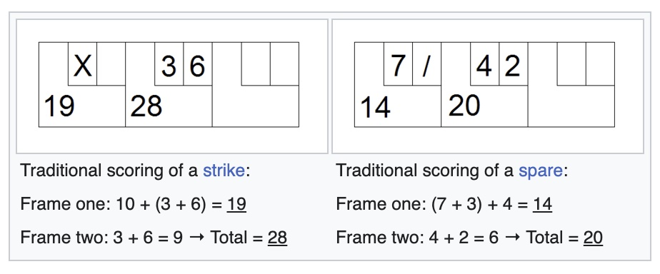

A Lisp Environment
Welcome to the Lisp Bowling Score Kata!
In this little book, we learn how to code in Common Lisp applying Test Driven Development.
We will be using the Steel Bank Common Lisp with as few external libraries as possible.
The Bowling Score Kata exercise is about writing a program that can compute scores at the Ten-Pin Bowling, given lists of rolls points made by players. We start with setting up the simplest environment that will allow us to code this kata in Common Lisp.
Requirements
The Game of Ten-Pins Bowling
Here's a reminder of the rules of bowling (source):
- The ultimate goal is to knock down all ten pins on your first turn.
- During each frame, each player gets two attempts to knock down all ten pins.
- Turns are called “frames,” and each player plays ten frames in a game.
- Knocking down all the pins on your first throw is called a strike.
- If you miss at least one pin on the first throw and then knock down any remaining pins on your second throw, it’s called a spare.
- If a player bowls a strike in the tenth frame, they get two more throws within that frame. If they get a spare in the final frame, the player gets to throw one more ball.
- Open frames are simply frames that left at least one pin standing.
- Scoring is based on the number of pins knocked down. Except, when you get a spare, you get 10 plus the number of pins you knock down during your next throw. If you get a strike, you get 10 plus the number of pins you knock down with your next two throws.
Here's an example of score (source):

The Program
Our task will be to write a program which, given a series of rolls delivered by Ten Pin Bowling players, computes the scores of these players. The roll values will be consistent with the game rules: no illegal values (such as -1, 11 or values totaling more than 10 in a frame). In test cases where not all rolls have been played, the resulting value should be the score obtained as if all the subsequent future rolls would be zero.
Our program's task will consist in reading the standard input stream, parsing the given numbers, computing and printing the scores.
Input specification
- T : the number of test cases, then T test cases follows.
- each test case consists in 2 lines:
- N : the number of rolls delivered, ( 0 < N ≤ 21 )
- R1,..Rn - the rolls delivered ( 0 ≤ R ≤ 10 )
Output specification
For each test case output one integer: the score made by the player after they played all the rolls in the test case.
Example
Input:
3
2
4 6
4
10 7 3 5
12
10 10 10 10 10 10 10 10 10 10 10 10
Output:
10
40
300
SBCL
SBCL is the most popular implementation of common lisp, and it generates machine code that is fast (not that it matters much for our kata!).
To quote Wikipedia:
Steel Bank Common Lisp (SBCL) is a free Common Lisp implementation that features a high-performance native compiler, Unicode support and threading.
The name "Steel Bank Common Lisp" is a reference to Carnegie Mellon University Common Lisp from which SBCL forked: Andrew Carnegie made his fortune in the steel industry and Andrew Mellon was a successful banker.
installing sbcl
On a Mac with macos:
> brew install sbcl
On a linux machine with ubuntu:
> sudo apt install sbcl
To check your installation:
> sbcl --version
SBCL 2.3.4
wrapping interactive sessions with rlwrap
As sbcl doesn't allow command editing and navigation in command history, we will wrap our sbcl sessions with the command: rlwrap sbcl.
On a Mac with macos:
> brew install rlwrap
On a linux machine with ubuntu:
> sudo apt install rlwrap
the Read-Eval-Print Loop
Let's play a bit with sbcl.
> rlwrap sbcl
This is SBCL 2.3.4, an implementation of ANSI Common Lisp.
More information about SBCL is available at <http://www.sbcl.org/>.
SBCL is free software, provided as is, with absolutely no warranty.
It is mostly in the public domain; some portions are provided under
BSD-style licenses. See the CREDITS and COPYING files in the
*
Sbcl is waiting for an input from the user. To leave the REPL, enter (exit) or type <CTL-D>
* 42
42
* 17
17
* (exit)
>
Functions
In lisp, calling a function is done by typing a list in which the first element is the function name and all the following elements if any are arguments. Here's an example (yes, + is a function):
* (+ 42 17)
59
A function can be called inside a function call (as long as we don't forget any parenthesis!)
* (- (* (+ 42 17) 82) (- (* 4 8) 1))
4807
Here are some interesting functions:
* (list 1 2 3 4 5)
(1 2 3 4 5)
* (defvar numbers (list 42 17 23 4807))
NUMBERS
* (car numbers)
42
* (cdr numbers)
(17 23 4807)
* (car (cdr numbers))
17
* (cadr numbers)
17
* (caddr numbers)
23
* (length numbers)
4
* (null numbers)
NIL
* (not (null numbers))
T
Quote
Not every value in lisp is a number. To represent symbolic values, we can use the quote function, or ':
* (quote foo)
FOO
* 'bar
BAR
We can quote symbols but also lists (of symbols or whatever). quote means: don't evaluate this.
* (quote (foo bar qux))
(FOO BAR QUX)
* '(+ 17 23)
(+ 17 23)
Conditions
T and NIL are the boolean values for respectively true and false. NIL is also the value for empty lists. To evaluate expressions according to a condition, we can use the if form:
* (if (= 42 (* 6 7)) 'correct 'wrong)
CORRECT
or we can use the cond form:
* (cond ((= 41 (* 6 7)) 'correct)
((= 23 (* 6 4)) 'wrong)
(t '(everything above was false)))
(EVERYTHING ABOVE WAS FALSE)
Functions
Functions can be defined with defun, followed by the name of the function, and the parameters (if any) between parentheses, then the body of the function.
* (defun times-two (x)
(* x 2))
TIMES-TWO
* (times-two 42)
84
Variable bindings
It is possible, using let to define variables and bind them to some values that are used in the last expression of the let form.
* (let ((x 17)
(y 23))
(+ x y))
40
The let* form allows for defining bindings with variables previously bound in the same list. (let won't let you do that).
* (let ((x 17)
(y (+ 23 x))
(+ x y))
; in: LET ((X 17) (Y (+ 23 X)))
; (+ 23 X)
;
; caught WARNING:
; undefined variable: COMMON-LISP-USER::X
;
; compilation unit finished
; Undefined variable:
; X
; caught 1 WARNING condition
debugger invoked on a UNBOUND-VARIABLE @535733C0 in thread
#<THREAD "main thread" RUNNING {10044A0113}>:
The variable X is unbound.
…
(let* ((x 17)
(y (+ x 23)))
(+ x y))
57
Lists and recursion
Recursive functions — functions that call themselves — work very well with lists. Here's an example:
* (defun size (l)
(if (null l)
0
(1+ (size (cdr l)))
)
)
SIZE
* (size '(A B C D E))
5
Creating Lists
How do we construct a list element by element? We use cons:
* (cons 'A nil)
(A)
* (cons 'A (cons 'B (cons 'C nil)))
(A B C)
Here's a function that creates the list of all numbers between n and m:
* (defun seq (n m)
(if (> n m)
nil
(cons n (seq (1+ n) m))
)
)
SEQ
* (seq 17 23)
(17 18 19 20 21 22 23)
Executing lisp scripts
To execute a script written in lisp with sbcl, launch sbcl with the --script option. Suppose we have a script file name my-script.lisp that prints the result of an addition,
; my-script.lisp prints the result of an addition
(print (+ 23 17 2))
then this script can be executed as a stand-alone program:
> sbcl --script my-script.lisp
42
Writing Tests
Unit Tests
To create unit tests in lisp, we will use the lisp-unit library.
A simple way to make it available for our tests scripts is to copy lips-unit.lisp in the standard location for lisp libraries:
cp lisp-unit.lisp ~/.local/share/common-lisp/source/.
(Or any better location).
Here's a test script with a dummmy test in it.
; tests.lisp
(require "lisp-unit" "~/.local/share/common-lisp/source/lisp-unit.lisp")
; set up testing option
(in-package :lisp-unit)
(setq *print-failures* t)
(define-test dummy-test
(assert-equal 5 (+ 2 2)))
(run-tests :all)
When we run this script, we get a test report:
| Failed Form: (+ 2 2)
| Expected 5 but saw 4
|
DUMMY-TEST: 0 assertions passed, 1 failed.
Unit Test Summary
| 1 assertions total
| 0 passed
| 1 failed
| 0 execution errors
| 0 missing tests
Acceptance Tests
The way we are going to create acceptance tests is very straightforward:
- we'll create a
test-cases.txtfile and fill it with a series of test cases - we'll create a reference file
expected.txtwhich will contain the expected results for the test cases - to test the program, we will run it, feeding it with the acceptance test cases file, and capturing the output in a
results.txtfile - then we will compare
expected.txtandresults.txtfor an exact match.
This is our test cases file: test-cases.txt
5
4
3 5 2 7
6
10 5 4 10 5 2
12
10 10 10 10 10 10 10 10 10 10 10 10
20
3 5 3 5 3 5 3 5 3 5 3 5 3 5 3 5 3 5 3 5
3
10 10 10
And this is the expected result file: expected.txt
17
52
300
80
30
Automating tasks
To automate our different tasks we can use make. With this Makefile:
unit: tests.lisp bowling.lisp
sbcl --script tests.lisp
accept: bowling.lisp test-cases.txt expected.txt score.lisp
sbcl --script score.lisp <test-cases.txt >results.txt
diff expected.txt results.txt
These tasks cannot be executed as long as the files they depend on are not present. So let's fix that:
> touch bowling.lisp
> echo "(print 42) (terpri)" >score.lisp
Now we can launch our testing tasks:
> make unit
sbcl --script tests.lisp
| Failed Form: (+ 2 2)
| Expected 5 but saw 4
|
DUMMY-TEST: 0 assertions passed, 1 failed.
Unit Test Summary
| 1 assertions total
| 0 passed
| 1 failed
| 0 execution errors
| 0 missing tests
> make accept
sbcl --script score.lisp <test-cases.txt >results.txt
diff expected.txt results.txt
1,5c1,2
< 17
< 52
< 300
< 80
< 60
---
>
> 42
make: *** [Makefile:6 : accept] Error 1
The Bowling Score Kata
The TDD method consists in creating capacities for the program one step at a time, following a cycle of
- writing a failing test
- make the pass
- refactor
Our todo list for the Bowling Score Kata starts with simple cases and progressively adds features :
- averages games (no bonus points)
- strike roll on the first frame
- strike rolls on any frame
- spare on the first frame
- spares on any frames
- tenth frame rule (only bonus rolls are counted)
Simple Games
Starting with the simplest case allows us to take care of the inevitable mistakes in writing code in a language that we don't master. Here's a simple case: when no roll has been thrown yet, the score is zero.
; tests.lisp
(require "lisp-unit" "~/.local/share/common-lisp/source/lisp-unit.lisp")
; set up testing options
(in-package :lisp-unit)
(setq *print-failures* t)
(load "bowling")
(define-test when-no-rolls-yet-score-is-zero
(assert-equal 0 (score ())))
(run-tests :all)
We make the test pass with the simplest code that can possibly work:
; bowling.lisp
(defpackage :bowling
(:export :score))
(defun score (rolls)
0)
Easy. Here's another case, one roll.
(define-test when-only-one-rolls-score-is-this-roll
(assert-equal 7 (score (list 7))))
To make it pass, we add a cond on the rolls list:
(defun score (rolls)
(cond ((null rolls) 0)
(t (car rolls))))
From here we can make fast progress. Let's add a test for several rolls, no bonus throw.
(define-test when-given-average-rolls-score-is-the-sum-of-the-rolls
(assert-equal 27 (score (list 4 5 3 6 2 7))))
We make it pass by installing recursion in the score function:
(defun score (rolls)
(cond ((null rolls) 0)
(t (+ (car rolls) (score (cdr rolls))))))
Strikes & Spares
Strikes
If the first roll knocked all the pins, it's a strike: the two following rolls will be added to the score as supplementary points.
(define-test after-a-strike-on-first-frame-next-two-rolls-add-bonus-points
(assert-equal 28 (score (list 10 5 4))))
We are adding a clause for strikes the cond: if the roll is a strike, then add the roll to the result, plus the next one, plus the following one, and proceed with the rest of the rolls.
(defun score (rolls)
(cond ((null rolls) 0)
((= 10 (car rolls)) (+ (car rolls)
(cadr rolls)
(caddr rolls)
(score (cdr rolls))))
(t (+ (car rolls) (score (cdr rolls))))))
A problem with this code is that it might break in case the list does not include all the following rolls yet. Let's update this test with new assertions to take that possibility into account
(define-test after-a-strike-on-first-frame-next-two-rolls-if-any-add-bonus-points
(assert-equal 28 (score (list 10 5 4)))
(assert-equal 20 (score (list 10 5)))
(assert-equal 10 (score (list 10))))
Now we have an execution error, because acessing (cadr rolls) when rolls has only one element yields nil and nil cannot be added to a number. We have to make sure we that the rolls we are adding to the score are values.
(defun score (rolls)
(cond ((null rolls) 0)
((= 10 (car rolls)) (+ (car rolls)
(if (not (null (cadr rolls))) (cadr rolls) 0)
(if (not (null (caddr rolls))) (caddr rolls) 0)
(score (cdr rolls))))
(t (+ (car rolls) (score (cdr rolls))))))
The test pass. Now we can refactor the messy code a bit.
(defun any (x)
(if (not (null x)) x 0))
(defun score (rolls)
(cond ((null rolls) 0)
((= 10 (car rolls)) (+ (car rolls)
(any (cadr rolls))
(any (caddr rolls))
(score (cdr rolls))))
(t (+ (car rolls) (score (cdr rolls))))))
Spares
Let's add the case for a spare in the first frame.
(define-test after-a-spare-on-first-frame-next-roll-if-any-add-bonus-points
(assert-equal 20 (score (list 2 8 5))))
To make this test pass, we add a clause to the cond:
(defun score (rolls)
(cond ((null rolls) 0)
((= 10 (car rolls)) (+ (car rolls)
(any (cadr rolls))
(any (caddr rolls))
(score (cdr rolls))))
((= 10 (+ (car rolls) (any (cadr rolls)))) (+ (car rolls)
(any (cadr rolls))
(any (caddr rolls))
(score (cddr rolls))))
(t (+ (car rolls) (score (cdr rolls))))))
Here again, we can refactor: let's make the code clearer by creating helper functions.
(defun any (x)
(if (not (null x)) x 0))
(defun frame-plus-bonus (rolls)
(+ (car rolls) (any (cadr rolls)) (any (caddr rolls))))
(defun strike (rolls)
(= 10 (car rolls)))
(defun spare (rolls)
(= 10 (+ (car rolls) (any (cadr rolls)))))
(defun score (rolls)
(cond ((null rolls) 0)
((strike rolls) (+ (frame-plus-bonus rolls) (score (cdr rolls))))
((spare rolls) (+ (frame-plus-bonus rolls) (score (cddr rolls))))
(t (+ (car rolls) (score (cdr rolls))))))
Let's add a general test of this function for good measure.
(define-test after-some-strikes-and-spares-bonus-rolls-are-added
(assert-equal 73 (score (list 5 5 4 5 8 2 10 0 10 0 0)))
(assert-equal 37 (score (list 5 5 4 0 8 1 10 0 0)))
(assert-equal 151 (score (list 5 5 4 0 8 1 10 0 10 10 10 10 4 6 0 0))))
They pass: provided that no illegal game — like (list 5 10 2) for instance — is given, our score function works… until the 10th frame at least.
The Tenth Frame
Once the tenth frame has been played, the only rolls that can be counted are the extra ones generated by a strike or a spare in the tenth frame. Thus, the score for throwing 12 strikes is exactly 300.
(define-test after-tenth-frame-extra-rolls-count-only-as-bonus
(assert-equal 300 (score (list 10 10 10 10 10 10 10 10 10 10 10 10))))
The test fails:
| Failed Form: (SCORE (LIST 10 10 10 10 10 10 10 10 10 10 10 10))
| Expected 300 but saw 330
|
AFTER-TENTH-FRAME-EXTRA-ROLLS-COUNT-ONLY-AS-BONUS: 0 assertions passed, 1 failed.
Let's respond with a hard coded comparison for now.
(defun score (rolls)
(cond ((null rolls) 0)
((equal (list 10 10 10 10 10 10 10 10 10 10 10 10) rolls) 300)
((strike rolls) (+ (frame-plus-bonus rolls)
(score (cdr rolls))))
((spare rolls) (+ (frame-plus-bonus rolls)
(score (cddr rolls))))
(t (+ (car rolls)
(score (cdr rolls))))))
The tenth frame limit requires that we count frame while we are examining them for points, and that when the frame count is greater or equal to 10, the counting stops.
Let's start by adding a frame parameter to our function.
(defun score-at-frame (frame rolls)
(cond ((null rolls) 0)
((equal (list 10 10 10 10 10 10 10 10 10 10 10 10) rolls) 300)
((strike rolls) (+ (frame-plus-bonus rolls)
(score-at-frame frame (cdr rolls))))
((spare rolls) (+ (frame-plus-bonus rolls)
(score-at-frame frame (cddr rolls))))
(t (+ (car rolls)
(score-at-frame frame (cdr rolls))))))
(defun score (rolls)
(score-at-frame 0 rolls))
Now we can add a clause to the cond and increase the frame argument at each recursive call.
(defun score-at-frame (frame rolls)
(cond ((null rolls) 0)
((>= frame 10) 0)
((strike rolls) (+ (frame-plus-bonus rolls)
(score-at-frame (1+ frame) (cdr rolls))))
((spare rolls) (+ (frame-plus-bonus rolls)
(score-at-frame (1+ frame) (cddr rolls))))
(t (+ (car rolls)
(score-at-frame (1+ frame) (cdr rolls))))))
The last clause is wrong of coure, since we increase the frame number while advancing only for one roll in the list. And one of the tests is telling us that:
| Failed Form: (SCORE (LIST 5 5 4 0 8 1 10 0 10 10 10 10 4 6 0 0))
| Expected 151 but saw 141
|
AFTER-SOME-STRIKES-AND-SPARES-BONUS-ROLLS-ARE-ADDED: 2 assertions passed, 1 failed.
The frame counting is incorrect here:
frame: 0 1 2 3 4 5 6 7 8 9 10
rolls: |5 5|4 0|8 1|10|0 10|10|10|10|4 6|0 0|
Let's fix this. The last clause of the function will add the current roll plus the next one (if any), then it will recusively call score-at-frame with an increased frame number.
(defun score-at-frame (frame rolls)
(cond ((null rolls) 0)
((>= frame 10) 0)
((strike rolls) (+ (frame-plus-bonus rolls)
(score-at-frame (1+ frame) (cdr rolls))))
((spare rolls) (+ (frame-plus-bonus rolls)
(score-at-frame (1+ frame) (cddr rolls))))
(t (+ (car rolls) (any (cadr rolls))
(score-at-frame (1+ frame) (cddr rolls))))))
There are 3 possibilities for matching this last clause:
rollscontains only 1 roll (and it's not a 10) : then(any (cadr rolls))is 0 andnilis passed to the next recursive callrollscontains 2 rolls (ant it's not a spare) : then the 2 rolls are added androllsandnilis passed to the next recursive callrollscontains more than 2 rolls (and we don't have a spare): then we add these rolls and continue with the correct frame number
Let's add some assertions to increase our confidence in that reasoning:
(define-test after-tenth-frame-extra-rolls-count-only-as-bonus
(assert-equal 300 (score (list 10 10 10 10 10 10 10 10 10 10 10 10)))
(assert-equal 266 (score (list 10 10 10 10 10 10 10 10 10 4 6 2)))
(assert-equal 262 (score (list 10 10 10 10 10 10 10 10 10 4 5)))
(assert-equal 264 (score (list 10 10 10 10 10 10 10 10 10 4 6 0))))
They all pass.
The Score Program
Now that we have a working score calculator, we can use it in the main program so that this program can effectively read its input, calculate, and then print the scores corresponding to the games given in the input.
Input & Output
Reading from standard input stream
The read function can read any value from the standard input. Here's an example: the following expression waits for a number on the standard input and then calculate its square.
* (let ((x (read))) (* x x))
42 ↵
1764
Reading From a File
If we can read values from the standard input as a source, it must be possible to read from another source ?
Of course! Let's try it:
> echo "4807" >value.txt
> rlwrap sbcl
* (defvar *my-stream* (open "./value.txt"))
MY-STREAM
* (read *my-stream*)
4807
Can we read several values, and put them in a list ? Again, let's try.
> echo "42" >values.txt
> echo "17" >>values.txt
> echo "23" >>values.txt
> cat values.txt
42
17
23
> rlwrap sbcl
* (defvar *s* (open "./values.txt"))
*S*
* (let ((v1 (read *s*)) (v2 (read *s*)) (v3 (read *s*)))
(cons v1 (cons v2 (cons v3 nil))))
(42 17 23)
Reading from a string
The read function is truly powerful. It can actually read from any stream, be it the standard input stream, an opened file, or a stream formed with a given string.
The function with-input-from-string allow us to
- define a named stream
- use it in a form as a source stream for
read
Here are examples:
* (with-input-from-string (s "42") (read s))
42
* (with-input-from-string (s "42 17") (cons (read s) (cons (read s) NIL)))
(42 17)
Reading numbers from a file source
Let's build the function we need, one step at a time.
Reading an empty source
Starting with trivial cases, when given a empty source, the function should return NIL.
(define-test given-no-numbers-read-numbers-give-nil
(let ((result (with-input-from-string (s "") (read-numbers s))))
(assert-equal nil result)))
Making this test pass with a fake:
; bowling.lisp
(defpackage :bowling
(:export :score :read-numbers))
(defun read-numbers (source)
nil)
Next, we add a test for reading a single value.
(define-test given-one-number-read-numbers-give-a-list-with-this-number
(let ((result (with-input-from-string (s "42") (read-numbers s))))
(assert-equal (list 42) result)))
To make our second test pass, reading one number, we have to detect that a numbers has been read from the source, or not. If there was a number, return a list with that number inside, if not, return nil.
(defun read-numbers (source)
(let ((n (read source)))
(if (null n) nil
(cons n nil))))
but now the result is unexpected: our test for empty source has an execution error:
GIVEN-NO-NUMBERS-READ-NUMBERS-GIVE-NIL: 0 assertions passed, 0 failed, and an execution error.
GIVEN-ONE-NUMBER-READ-NUMBERS-GIVE-A-LIST-WITH-THIS-NUMBER: 1 assertions passed, 0 failed.
We have to try the function interactively to understand what is happening:
sbcl --load bowling.lisp
* (with-input-from-string (s "42") (read-numbers s))
(42)
* (with-input-from-string (s "") (read-numbers s))
debugger invoked on a END-OF-FILE in thread
#<THREAD "main thread" RUNNING {10044A0113}>:
end of file on #<dynamic-extent STRING-INPUT-STREAM (unavailable) from "">
Dealing with EOF
The "end of file" situation on our stream is an error condition that interrupts our program.
This can be fixed with one of the (optional) parameters of read.
Function READ
- Syntax:
- read &optional input-stream eof-error-p eof-value recursive-p => object
- Arguments and Values:
- input-stream — an input stream designator.
- eof-error-p — a generalized boolean. The default is true.
- eof-value — an object. The default is nil.
- recursive-p — a generalized boolean. The default is false.
- object — an object (parsed by the Lisp reader) or the eof-value.
…If a file ends in a symbol or a number immediately followed by an end of file, read reads the symbol or number successfully; when called again, it sees the end of file and only then acts according to eof-error-p.
We have to indicate that the end of file shouldn't be an error. Let's use a constant to document this.
(defconstant NO-EOF-ERROR nil)
(defun read-numbers (source)
(let ((n (read source NO-EOF-ERROR)))
(if (null n) nil
(cons n nil))))
Now all the tests pass.
Reading a List of Numbers
Reading several numbers from the input source should be straightforward using recursion. Let's write a new test:
; tests.lisp
; …
(define-test given-several-number-read-numbers-give-a-list-with-these-numbers
(let ((result (with-input-from-string (s "42 17 23") (read-numbers s))))
(assert-equal (list 42 17 23) result)))
To make the test pass, we replace the last nil in the function, by a recursive call:
(defun read-numbers (source)
(let ((n (read source NO-EOF-ERROR)))
(if (null n) nil
(cons n (read-numbers source)))))
Can we try our function of some more numbers, for instance, the numbers that are in the test-cases.txt file ?
5
4
3 5 2 7
6
10 5 4 10 5 2
12
10 10 10 10 10 10 10 10 10 10 10 10
20
3 5 3 5 3 5 3 5 3 5 3 5 3 5 3 5 3 5 3 5
3
10 10 10
Let's try!
> rlwrap sbcl --load "bowling"
* (read-numbers (open "lisp/test-cases.txt"))
(5 4 3 5 2 7 6 10 5 4 10 5 2 12 10 10 10 10 10 10 10 10 10 10 10 10 20 3 5 3 5
3 5 3 5 3 5 3 5 3 5 3 5 3 5 3 5 3 10 10 10)
It works!
Printing numbers on the standard output stream
Printing numbers can be done via the powerful function format. This function, given a destination of T will format and print any value on the standard output. If the destination is NIL the result is returned as a string instead of printed.
* (format T "~a~%" 4807)
4807
0 (format NIL "~a~%" 42)
"42
"
Writing a function format-numbers is straighforward, and easier to write than to test, actually.
(define-test given-a-list-of-numbers-format-them
(let ((result (format-numbers NIL (list 4 2))))
(assert-equal (list (format NIL "~a~%" 4)
(format NIL "~a~%" 2)) result)))
We create a list of format:
(defun format-numbers (dest numbers)
(cond ((null numbers) nil)
(t (cons
(format dest "~a~%" (car numbers))
(format-numbers dest (cdr numbers))))))
And the test passes.
In fact, we can even simplify this function by using mapcar and lambda.
mapcar applies a function to each element of a list, and lambda creates an anonymous function. Here are examples:
* (mapcar #'1+ (list 1 2 3))
(2 3 4)
* ((lambda (n) (* n n)) 42)
1764
* (mapcar (lambda (n) (* n n)) (list 42 17 23))
(1764 289 529)
Let's rewrite format-numbers:
(defun format-numbers (dest numbers)
(mapcar (lambda (n) (format dest "~a~%" n)) numbers))
The tests pass. We can try our function interactively:
> slwrap sbcl --load "bowling"
* (format-numbers T (list 4 8 0 7))
4
8
0
7
(NIL NIL NIL NIL)
It works!
Processing the Games in Input
As explained initially our program's task is to:
- read the input stream, taking all the numbers from there
- interpret this list of numbers as information about the test cases:
- a number T of tests cases followed by T series of
- a number N of rolls in this test case, followed by
- R1 R2 … RN numbers: the rolls themselves for this test case
- a number T of tests cases followed by T series of
- produce the scores for these games,
- print each of these scores, separated by a new line.
In this chapter, we will interest ourselves in the main function of our program. It will consume a list, and return a list.
For instance, processing the list (3 2 8 0 4 8 1 7 2 5 8 1 7 2 6) should result the list (8 18 24). Why?
- the first number indicates 3 games to process. The data for these 3 games is formed by the list
(2 8 0 4 8 1 7 2 5 8 1 7 2 6). - the first number the first game has 2 rolls:
(8 0)for which computing the score will yield8. The rest to process is the list(4 8 1 7 2 5 8 1 7 2 6). - the second game has 4 rolls:
(8 1 7 2)for which computing the score will yield18. The rest to process it the list(5 8 1 7 2 6) - the third game has 5 rolls:
(8 1 7 2 6)for a score of24and the rest to process is the empty list, which will end the process.
Extracting the first game from the game data
In order to process each game in turn, we need to generate 2 lists:
- the rolls for the current game to be processed (the lenght of this list is given by the very firt element of the data)
- the rest of game data
Here's test:
(define-test given-game-data-extract-game-return-first-game-and-remaining-data
(let ((result (extract-game (list 3 4 9 0 2 5 8))))
(assert-equal '((4 9 0) 2 5 8) result)))
We can write this function using subseq, which given a list, a start index and an (optional) end index, returns the corresponding subsequence of the list. Here are some examples:
* (defvar l '(a b c d e))
L
* (subseq l 0 3)
(A B C)
* (subseq l 3)
(D E)
Hence the function:
(defun extract-game (games)
(let* ((n (car games))
(data (cdr games))
(rolls (subseq data 0 n))
(remain (subseq data n)))
(cons rolls remain)))
And the test passes.
Extracting all the games
From here, extracting all the games is easy: recursively extract each first game. Here's a test:
(define-test given-game-data-extract-games-return-all-the-games
(let ((result (extract-games (list 3 4 9 0 2 5 8))))
(assert-equal '((4 9 0) (5 8)) result)))
(defun extract-games (games)
(cond ((null games) nil)
(t (let* ((extraction (extract-game games))
(game (car extraction))
(remaining (cdr extraction)))
(cons game (extract-games remaining))))))
We can try the function on the test cases. We must not forget to remove the first number in this list, which represents the number of test cases. This number is not needed, as we rely on the end of the list to stop the process.
> sbcl --load bowling.lisp"
* (defvar data (read-numbers (open "./lisp/test-cases.txt")))
DATA
* data
(5 4 3 5 2 7 6 10 5 4 10 5 2 12 10 10 10 10 10 10 10 10 10 10 10 10 20 3 5 3 5
3 5 3 5 3 5 3 5 3 5 3 5 3 5 3 5 3 10 10 10)
* (extract-games (cdr data))
((3 5 2 7) (10 5 4 10 5 2) (10 10 10 10 10 10 10 10 10 10 10 10)
(3 5 3 5 3 5 3 5 3 5 3 5 3 5 3 5 3 5 3 5) (10 10 10))
It works!
Final Assembly
We are almost done: the last step consists in assembling our functions in the main program, score.lisp ;
; score.lisp
(load "bowling")
(format-numbers T
(mapcar #'score
(extract-games
(cdr (read-numbers *standard-input*)))))
Now we can run the acceptance test:
> make accept
sbcl --script score.lisp <test-cases.txt >results.txt
diff expected.txt results.txt
No diff: the test passes.
We can also use the program interactively:
>sbcl --script score.lisp
1 ↵
5 ↵
10 3 4 2 0 ↵ <ctl-D>
26
And we are done!
Source Code
tests.lisp
; tests.lisp
(require "lisp-unit" "~/.local/share/common-lisp/source/lisp-unit.lisp")
; set up testing options
(in-package :lisp-unit)
(setq *print-failures* t)
(load "bowling")
(define-test when-no-rolls-yet-score-is-zero
(assert-equal 0 (score ())))
(define-test when-only-one-rolls-score-is-this-roll
(assert-equal 7 (score (list 7))))
(define-test when-given-average-rolls-score-is-the-sum-of-the-rolls
(assert-equal 27 (score (list 4 5 3 6 2 7))))
(define-test after-a-strike-on-first-frame-next-two-rolls-if-any-add-bonus-points
(assert-equal 28 (score (list 10 5 4)))
(assert-equal 20 (score (list 10 5)))
(assert-equal 10 (score (list 10))))
(define-test after-a-spare-on-first-frame-next-roll-if-any-add-bonus-points
(assert-equal 20 (score (list 2 8 5))))
(define-test after-some-strikes-and-spares-bonus-rolls-are-added
(assert-equal 73 (score (list 5 5 4 5 8 2 10 0 10 0 0)))
(assert-equal 37 (score (list 5 5 4 0 8 1 10 0 0)))
(assert-equal 151 (score (list 5 5 4 0 8 1 10 0 10 10 10 10 4 6 0 0))))
(define-test after-tenth-frame-extra-rolls-count-only-as-bonus
(assert-equal 300 (score (list 10 10 10 10 10 10 10 10 10 10 10 10)))
(assert-equal 266 (score (list 10 10 10 10 10 10 10 10 10 4 6 2)))
(assert-equal 262 (score (list 10 10 10 10 10 10 10 10 10 4 5)))
(assert-equal 264 (score (list 10 10 10 10 10 10 10 10 10 4 6 0))))
(define-test given-no-numbers-read-numbers-give-nil
(let ((result (with-input-from-string (s "") (read-numbers s))))
(assert-equal nil result)))
(define-test given-one-number-read-numbers-give-a-list-with-this-number
(let ((result (with-input-from-string (s "42") (read-numbers s))))
(assert-equal (list 42) result)))
(define-test given-several-number-read-numbers-give-a-list-with-these-numbers
(let ((result (with-input-from-string (s "42 17 23") (read-numbers s))))
(assert-equal (list 42 17 23) result)))
(define-test given-a-list-of-numbers-format-them
(let ((result (format-numbers NIL (list 4 2))))
(assert-equal (list (format NIL "~a~%" 4)
(format NIL "~a~%" 2)) result)))
(define-test given-game-data-extract-game-return-first-game-and-remaining-data
(let ((result (extract-game (list 3 4 9 0 2 5 8))))
(assert-equal '((4 9 0) 2 5 8) result)))
(define-test given-game-data-extract-games-return-all-the-games
(let ((result (extract-games (list 3 4 9 0 2 5 8))))
(assert-equal '((4 9 0) (5 8)) result)))
(run-tests :all)
bowling.lisp
; bowling.lisp
(defpackage :bowling
(:export :score :read-numbers))
(defconstant NO-EOF-ERROR nil)
(defun extract-game (games)
(let* ((n (car games))
(data (cdr games))
(rolls (subseq data 0 n))
(remain (subseq data n)))
(cons rolls remain)))
(defun extract-games (games)
(cond ((null games) nil)
(t (let* ((extraction (extract-game games))
(game (car extraction))
(remaining (cdr extraction)))
(cons game (extract-games remaining))))))
(defun read-numbers (source)
(let ((n (read source NO-EOF-ERROR)))
(if (null n) nil
(cons n (read-numbers source)))))
(defun format-numbers (dest numbers)
(mapcar (lambda (n) (format dest "~a~%" n)) numbers))
(defun any (x)
(if (not (null x)) x 0))
(defun frame-plus-bonus (rolls)
(+ (car rolls) (any (cadr rolls)) (any (caddr rolls))))
(defun strike (rolls)
(= 10 (car rolls)))
(defun spare (rolls)
(= 10 (+ (car rolls) (any (cadr rolls)))))
(defun score-at-frame (frame rolls)
(cond ((null rolls) 0)
((>= frame 10) 0)
((strike rolls) (+ (frame-plus-bonus rolls)
(score-at-frame (1+ frame) (cdr rolls))))
((spare rolls) (+ (frame-plus-bonus rolls)
(score-at-frame (1+ frame) (cddr rolls))))
(t (+ (car rolls) (any (cadr rolls))
(score-at-frame (1+ frame) (cddr rolls))))))
(defun score (rolls)
(score-at-frame 0 rolls))
score.lisp
; score.lisp
(load "bowling")
(format-numbers T
(mapcar #'score
(extract-games
(cdr (read-numbers *standard-input*)))))